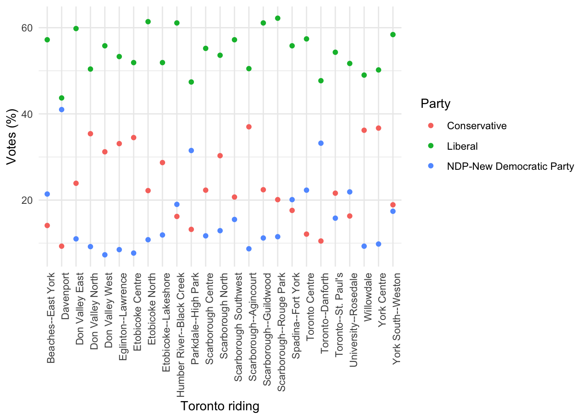

3 Case study - The 2019 Canadian Federal Election
This case study is heavily based on code originally written by Sharla Gelfand. Sharla’s original presentation is available here. Thank you to Sharla for giving permission to re-use this code.
Required reading
- Wickham, Hadley, and Garrett Grolemund, 2017, ‘R for Data Science’, Chapter 3, freely available at: https://r4ds.had.co.nz/.
- Gelfand, Sharla, 2019, ‘Cleaning up after the federal election’, freely available at: https://sharla.party/talk/2019-10-24-uoft-brown-bag/.
Recommended reading
- Alexander, Monica, 2019, ‘The concentration and uniqueness of baby names in Australia and the US’, freely available at: https://www.monicaalexander.com/posts/2019-20-01-babynames/.
- Brody, Howard, Michael Russell Rip, Peter Vinten-Johansen, Nigel Paneth, and Stephen Rachman, 2000, ‘Map-making and myth-making in Broad Street: the London cholera epidemic, 1854’, The Lancet, 356, no. 9223, pp. 64-68.
- Hvitfeldt, Emil, 2020, ‘Emoji in ggplot2’, freely available at: https://www.hvitfeldt.me/blog/real-emojis-in-ggplot2/.
- Pavlik, Kaylin, 2018, ‘Dairy Queen Deserts in Minnesota’, freely available at: https://www.kaylinpavlik.com/dairy-queen-deserts/.
- Rogers, Simon, 2013, ‘John Snow’s data journalism: the cholera map that changed the world’, freely available at: https://www.theguardian.com/news/datablog/2013/mar/15/john-snow-cholera-map.
- Scherer, Cédric, 2019, ‘Best TidyTuesday 2019’, freely available at: https://cedricscherer.netlify.com/2019/12/30/best-tidytuesday-2019/.
- Silge, Julia, 2019, ‘Reordering and facetting for ggplot2’, freely available at: https://juliasilge.com/blog/reorder-within/.
- Smale, David, 2020, ‘Daniel Johnston’, freely available at: https://davidsmale.netlify.com/portfolio/daniel-johnston/.
- Smale, David, 2019, ‘Happy Days’, freely available at: https://davidsmale.netlify.com/portfolio/happy-days/.
Key libraries
ggplot2herejanitorskimrtidyverse
Key functions
%>%clean_names()pivot_longer()skim()
3.1 Introduction
This case study introduces how to make graphs and tables. Some of the code may be a bit unfamiliar to you if it’s your first time using R. Don’t worry. It’ll all soon be familiar. But the only way to learn how to code is to code. Please try to get this working on your own computer, typing out (not copy/pasting) all the code that you need.
One of the great things about graphs and tables is that sometimes this is all you need to have a convincing story (Figures 3.1, 3.2).

Figure 3.1: A famous example where a map helped identify the cause of Cholera
Source: By John Snow - Published by C.F. Cheffins, Lith, Southhampton Buildings, London, England, 1854 in Snow, John. On the Mode of Communication of Cholera, 2nd Ed, John Churchill, New Burlington Street, London, England, 1855.
Figure 3.2: How footballers measure against athletes in major US sports
Source: Ganesh, Janan, 2020, ‘Will Liverpool’s machine football conquer America?’, Financial Times, 21 February 2020, available at: https://www.ft.com/content/d61f94ba-53cb-11ea-8841-482eed0038b1, via John Burn-Murdoch.
In this case study we are going to focus on making a table and a graph from our data. Although you will be guided thoroughly to achieve this, hopefully by seeing the power of quantitative analysis with R you will be motivated to stick with it when you run into difficulties later on.
3.2 Create a graph based on the 2019 Canadian Federal election
3.2.1 Getting started
To get started you should open a new R Markdown file (File -> New File -> R Markdown). As this is our first attempt at using R in the wild, we will just have everything in the one R Markdown document. (In later projects we will move to a more robust set-up.) Then you should create a new R code chunk (command + option + i) and add some preamble documentation. I like to specify the purpose of the document, who the author is and their contact details, when the file was written or last updated, and pre-requisites that the file relies on. You may also like to include a license, and list outstanding issues or todos. Remember that in R, lines that start with ‘#’ are comments - they won’t run.
#### Preamble ####
# Purpose: Read in voting data from the 2019 Canadian Election and output a
# dataset that can be used for analysis.
# Author: Rohan Alexander
# Email: rohan.alexander@utoronto.ca
# Date: 9 January 2019
# Prerequisites: Need the text file from the Canadian elections website
# Issues:
# To do:After this I typically set-up my workspace. This usually involves installing and/or reading in any packages, and possibly updating them. Remember that you only need to install a package once for each computer. But you need to call it every time you want to use it. (Here I’ve added excessive comments so that you know what is going on and why - in general I wouldn’t explain what tidyverse is.)
#### Workspace set-up ####
install.packages("tidyverse") # Only need to do this once
# tidyverse is a collection of packages
# Try ?tidyverse to see more
library(tidyverse) # Calls the tidyverse - need to do this each time.
install.packages("janitor") # Only need to do this once
library(janitor) # janitor helps us clean datasets
install.packages("here")
library(here) # here helps us to know where files are
install.packages("skimr")
library(skimr) # skimr is handy to give a quick overview of your dataset
# update.packages() # You can uncomment this if you want to update your packages. 3.2.2 Reading in the data
We read in the dataset from the Elections Canada website. We can actually pass a website to the read_tsv() function, which saves a lot of time.
#### Read in the data ####
# Read in the data using read_tsv from the readr package (part of the tidyverse)
# The <- is assing the output of readr::read_tsv to a object called raw_data.
raw_2019_elections_data <- readr::read_tsv(file = "http://enr.elections.ca/DownloadResults.aspx",
skip = 1) ## Parsed with column specification:
## cols(
## `Electoral district number - Numéro de la circonscription` = col_double(),
## `Electoral district name` = col_character(),
## `Nom de la circonscription` = col_character(),
## `Type of results*` = col_character(),
## `Type de résultats**` = col_character(),
## `Surname - Nom de famille` = col_character(),
## `Middle name(s) - Autre(s) prénom(s)` = col_logical(),
## `Given name - Prénom` = col_character(),
## `Political affiliation` = col_character(),
## `Appartenance politique` = col_character(),
## `Votes obtained - Votes obtenus` = col_double(),
## `% Votes obtained - Votes obtenus %` = col_double(),
## `Rejected ballots - Bulletins rejetés***` = col_double(),
## `Total number of ballots cast - Nombre total de votes déposés` = col_double()
## )## Warning: 3 parsing failures.
## row col expected actual file
## 4293 Electoral district number - Numéro de la circonscription a double *Type of results: preliminary results are unofficial results from election night; validated results are official results validated by each returning officer; judicially certified results are official results validated by a judge following a judicial recount. 'http://enr.elections.ca/DownloadResults.aspx'
## 4294 Electoral district number - Numéro de la circonscription a double **Type de résultats : les résultats préliminaires sont les résultats non officiels du soir d'élection; les résultats validés sont les résultats officiels validés par le directeur du scrutin; les résultats de dépouillement judiciaire sont les résultats officiels validés par un juge après un dépouillement judiciaire. 'http://enr.elections.ca/DownloadResults.aspx'
## 4295 Electoral district number - Numéro de la circonscription a double ***The rejected ballots count is not available for the preliminary results. / Le nombre de bulletins de vote rejetés n'est pas disponible pour les résultats préliminaires. 'http://enr.elections.ca/DownloadResults.aspx'3.2.3 Clean the data
Now we’d like to clean the data so that we can use it.
#### Basic cleaning ####
raw_2019_elections_data <- read_csv(here("notes/inputs/data/canadian_2019_voting.csv"))## Parsed with column specification:
## cols(
## `Electoral district number - Numéro de la circonscription` = col_double(),
## `Electoral district name` = col_character(),
## `Nom de la circonscription` = col_character(),
## `Type of results*` = col_character(),
## `Type de résultats**` = col_character(),
## `Surname - Nom de famille` = col_character(),
## `Middle name(s) - Autre(s) prénom(s)` = col_logical(),
## `Given name - Prénom` = col_character(),
## `Political affiliation` = col_character(),
## `Appartenance politique` = col_character(),
## `Votes obtained - Votes obtenus` = col_double(),
## `% Votes obtained - Votes obtenus %` = col_double(),
## `Rejected ballots - Bulletins rejetés***` = col_double(),
## `Total number of ballots cast - Nombre total de votes déposés` = col_double()
## )# If you called the library (as we did) then you don't need to use this set-up
# of janitor::clean_names, you could just use clean_names, but I'm making it
# explicit here, but won't in the future.
cleaned_2019_elections_data <- janitor::clean_names(raw_2019_elections_data)
# One thing to notice for those who have a stata background is that we just
# overwrote the name - that's fine in R.
# The pipe operator - %>% - pushes the output from one line to be an input to the
# next line.
cleaned_2019_elections_data <-
cleaned_2019_elections_data %>%
# Filter to only have certain rows
filter(type_of_results == "validated") %>%
# Select only certain columns
select(electoral_district_number_numero_de_la_circonscription,
electoral_district_name,
political_affiliation,
surname_nom_de_famille,
percent_votes_obtained_votes_obtenus_percent
) %>%
# Rename the columns to be a bit shorter
rename(riding_number = electoral_district_number_numero_de_la_circonscription,
riding = electoral_district_name,
party = political_affiliation,
surname = surname_nom_de_famille,
votes = percent_votes_obtained_votes_obtenus_percent)Finally we may like to save our cleaned dataset.
3.2.4 Make a graph
First we need to read in the dataset, when then filter the number of parties to a smaller number, and filter to only ridings in Ontario.
#### Read in the data ####
cleaned_2019_elections_data <-
readr::read_csv(here("notes/outputs/data/cleaned_canadian_2019_voting.csv"))## Parsed with column specification:
## cols(
## riding_number = col_double(),
## riding = col_character(),
## party = col_character(),
## surname = col_character(),
## votes = col_double()
## )# Make a graph just considers Toronto riding
toronto_ridings <- c("Beaches--East York", "Davenport", "Don Valley East", "Don Valley North", "Don Valley West", "Eglinton--Lawrence", "Etobicoke Centre", "Etobicoke North", "Etobicoke--Lakeshore", "Humber River--Black Creek", "Parkdale--High Park", "Scarborough Centre", "Scarborough North", "Scarborough Southwest", "Scarborough--Agincourt", "Scarborough--Guildwood", "Scarborough--Rouge Park", "Spadina--Fort York", "Toronto Centre", "Toronto--Danforth", "Toronto--St. Paul's", "University--Rosedale", "Willowdale", "York Centre", "York South--Weston")
cleaned_2019_elections_data %>%
filter(party %in% c("Bloc Québécois",
"Conservative",
"Liberal",
"NDP-New Democratic Party")
) %>%
filter(riding_number > 35000,
riding_number < 36000,
) %>%
filter(riding %in% toronto_ridings) %>%
ggplot(aes(x = riding, y = votes, color = party)) +
geom_point() +
theme_minimal() + # Make the theme neater
theme(axis.text.x = element_text(angle = 90, hjust = 1)) + # Change the angle
labs(x = "Toronto riding",
y = "Votes (%)",
color = "Party")
3.2.5 Make a table
#### Read in the data ####
cleaned_2019_elections_data <-
readr::read_csv(here("notes/outputs/data/cleaned_canadian_2019_voting.csv"))## Parsed with column specification:
## cols(
## riding_number = col_double(),
## riding = col_character(),
## party = col_character(),
## surname = col_character(),
## votes = col_double()
## )#### Make some tables ####
# Try some different default summary table
summary(cleaned_2019_elections_data)## riding_number riding party surname
## Min. :10001 Length:2146 Length:2146 Length:2146
## 1st Qu.:24051 Class :character Class :character Class :character
## Median :35056 Mode :character Mode :character Mode :character
## Mean :35584
## 3rd Qu.:47007
## Max. :62001
## votes
## Min. : 0.00
## 1st Qu.: 1.50
## Median : 7.80
## Mean :15.75
## 3rd Qu.:26.48
## Max. :85.50| Name | cleaned_2019_elections_da… |
| Number of rows | 2146 |
| Number of columns | 5 |
| _______________________ | |
| Column type frequency: | |
| character | 3 |
| numeric | 2 |
| ________________________ | |
| Group variables | None |
Variable type: character
| skim_variable | n_missing | complete_rate | min | max | empty | n_unique | whitespace |
|---|---|---|---|---|---|---|---|
| riding | 0 | 1 | 4 | 50 | 0 | 338 | 0 |
| party | 0 | 1 | 2 | 29 | 0 | 23 | 0 |
| surname | 0 | 1 | 2 | 20 | 0 | 1804 | 0 |
Variable type: numeric
| skim_variable | n_missing | complete_rate | mean | sd | p0 | p25 | p50 | p75 | p100 | hist |
|---|---|---|---|---|---|---|---|---|---|---|
| riding_number | 0 | 1 | 35584.21 | 13406.13 | 10001 | 24051.0 | 35056.0 | 47007.00 | 62001.0 | ▂▆▇▅▃ |
| votes | 0 | 1 | 15.75 | 17.89 | 0 | 1.5 | 7.8 | 26.48 | 85.5 | ▇▂▂▁▁ |
# Make our own
cleaned_2019_elections_data %>%
# Using group_by and summarise means that whatever summary statistics we
# construct will be on a party basis. We could group_by multiple variables and
# similarly, we could create a bunch of different other summary statistics.
group_by(party) %>%
summarise(min = min(votes),
mean = mean(votes),
max = max(votes))## # A tibble: 23 x 4
## party min mean max
## <chr> <dbl> <dbl> <dbl>
## 1 Animal Protection Party 0.3 0.447 0.7
## 2 Bloc Québécois 4 32.1 58.2
## 3 CFF - Canada's Fourth Front 0.1 0.186 0.3
## 4 Christian Heritage Party 0.2 0.737 3.3
## 5 Communist 0.1 0.24 0.7
## 6 Conservative 2.3 34.0 85.5
## 7 Green Party 1.3 6.46 49.1
## 8 Independent 0.1 1.16 32.6
## 9 Liberal 4.1 33.5 62.2
## 10 Libertarian 0.3 0.604 2.4
## # … with 13 more rowsThe skim function from the skimr package is just a quick way of looking at the data. It can be handy when you get a new dataset to quickly come to terms with it. The p0, p25, p50, etc, values that it provides are percentiles. So for instance, P50 is the 50th percentile which means that 50 per cent of the data are below this, and 50 per cent are above i.e. the median. P0 should be the minimum, and p100 should be the maximum. The middle ones are similarly defined, so p25, means that 25 per cent of the data are below this point and 75 per cent of it is above this point. The general idea of both the percentiles and the histogram is to give you a quick idea of how skewed your data is.